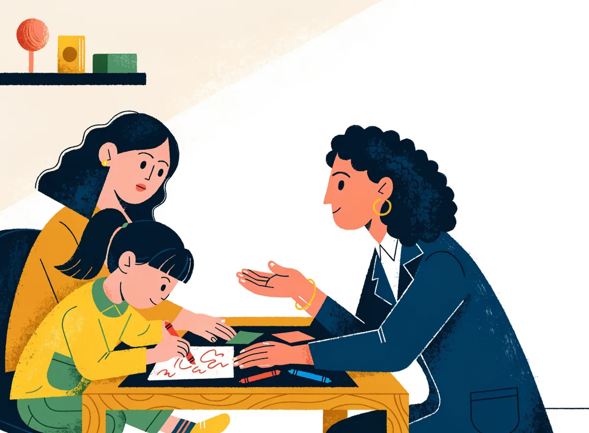
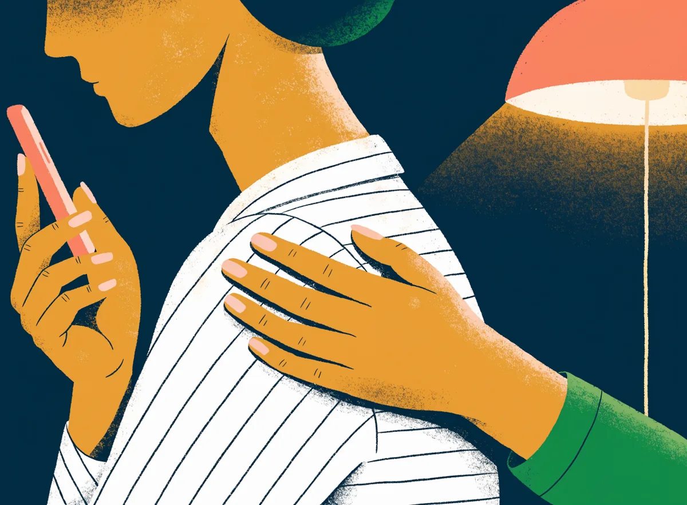

What we treat
Every condition here has a plan, a measure, and a way back.
Ten specialty clinics under one roof on Jail Road. For each one, this page tells you what we look for, how we treat it, and what your first visit will be like. Nothing here is a diagnosis. That takes a doctor who has met you.
Mood clinic
Depression and bipolar disorder
Everyone has bad days. Depression is when the heaviness stays for two weeks or more and starts taking your sleep, your appetite and your interest in things you used to enjoy. Bipolar disorder adds the opposite: stretches of too much energy, too little sleep, and talking or spending that is not like you. Both are medical conditions. Both respond to treatment.
Signs we look for
- Low mood or irritability most of the day, most days, for two weeks or more
- No pleasure in things you used to enjoy: food, family, prayer, TV, work
- Sleep breaking at 3 or 4 am, or sleeping far more than usual
- Tiredness, body aches, "gas" or heaviness that reports cannot explain
- Thoughts that life is not worth living, or that the family would be better off without you
- Spells of unusual energy, little need for sleep, big plans or spending (bipolar pattern)
How we treat
- Medicines
- Antidepressants, which usually take 2 to 4 weeks to begin working and are continued for months after you feel well. Mood stabilisers for bipolar disorder, with the blood tests some of them need. Each tablet explained in plain words: what it is for, what to expect by week 2 and week 6.
- Therapy
- Behavioural activation and CBT-based sessions in Gujarati, Hindi or English. A family session when a relative is holding the medicines.
- We measure
- PHQ-9 (scored out of 27) at every visit. A daily mood and sleep chart for bipolar disorder, so a high or a low is caught early.
- Follow-up
- Week 2, week 6, then monthly. Video follow-ups once you are stable.
Your first visit
- Bring
- Old prescriptions and reports, and a list of every medicine you take (thyroid, BP, sugar included). Someone who has seen the change in you, if you want.
- Time
- 30-40 minutes with the doctor. Arrive by your token time, not before.
- Who comes in
- Your choice, every time. Family can sit with you or wait outside.
Anxiety & OCD clinic
Panic, phobias, worry and OCD
A racing heart, a tight chest and the certainty that something terrible is about to happen. Many people reach a cardiologist before they reach us. Panic, phobias, constant worry and OCD are among the most treatable conditions in psychiatry, and the plan is similar whether the fear is of crowds, of germs, or of nothing you can name.
Signs we look for
- Sudden attacks of racing heart, sweating, trembling and breathlessness that peak within minutes
- Worry about health, money or family that you cannot switch off, most days for months
- Avoiding buses, lifts, temples or weddings because of the fear of an attack
- Washing, checking or counting repeated until it "feels right", an hour or more a day
- Unwanted thoughts about dirt, harm, religion or sex that you know make no sense but cannot stop
- A normal ECG, thyroid and sugar report, and still the symptoms
How we treat
- Medicines
- SSRI-type medicines that lower the baseline of anxiety over 4 to 6 weeks. Short-acting calming tablets only when needed and only briefly, because they can become a habit.
- Therapy
- CBT for panic. Exposure and response prevention (ERP) for OCD, taught step by step with homework between visits. Breathing and grounding drills you can practise with Saathi at 2 am.
- We measure
- GAD-7 (out of 21) for anxiety and Y-BOCS (out of 40) for OCD, at every visit.
- Follow-up
- Every 2-3 weeks at first. ERP homework is reviewed each time.
Your first visit
- Bring
- Any ECG, thyroid or other reports you already have, so we do not repeat them. A note of when the attacks happen and what you were doing.
- Time
- 30-40 minutes. If waiting rooms frighten you, ask for the first slot of a session.
- Who comes in
- Alone or with someone. For OCD, a relative who has been pulled into the rituals often helps.
Psychosis clinic
Schizophrenia and other psychoses
Psychosis means losing touch with what is real: hearing voices nobody else hears, believing neighbours or family are plotting, or withdrawing into a room for weeks. Schizophrenia is the best-known cause, but psychosis can also come with mania, severe depression, ganja, or a medical illness. Early treatment makes the biggest difference, and most people recover enough to work, marry and live at home.
Signs we look for
- Hearing voices or sounds that others cannot hear, often commenting or giving orders
- Fixed beliefs that someone is spying, poisoning food or doing black magic, despite proof
- Talking, smiling or muttering alone; speech that is hard to follow
- Weeks of withdrawal: not bathing, not working, not meeting anyone
- Sleep reversed, suspicion of family, refusing food from certain people
- Early signs before a first episode: falling grades, odd ideas, new fears, dropping friends
How we treat
- Medicines
- Antipsychotic medicines, explained plainly, with the weight, sugar and movement checks some of them need. When tablets keep getting missed, a long-acting injection given every few weeks can replace them. That choice is made together with the person and the family.
- Family
- Psychoeducation sessions: what the illness is, what to say and what not to say, and a written relapse plan with the early warning signs for this person.
- We measure
- A brief symptom rating at each visit. In My Care, missed doses, sleep drop and the family's warning-sign checklist raise a flag so the clinic can call before a relapse, not after.
- Follow-up
- Every 2-4 weeks early on, monthly when stable. Injection visits are fixed in the calendar.
Your first visit
- Bring
- A relative who has watched the change, previous prescriptions or discharge papers, and an honest note of any ganja or alcohol use.
- Time
- 40 minutes or more. The person may not agree there is a problem. That is normal, and nobody will be forced into a conversation.
- Who comes in
- We talk to the person alone first, then with the family if they agree. Their rights under the Mental Healthcare Act 2017 are explained to everyone in the room.
Deaddiction centre
Tobacco, gutka, alcohol, ganja, opioids, phone and gaming
Gutka, mawa, bidi and alcohol are Saurashtra's everyday addictions. They are habits with chemistry behind them, not a weakness of character. The centre treats tobacco in all its forms, alcohol, ganja, opioids and sleeping pills, and the newer habits of phone and gaming, through a 90-day programme called Quit with Kiran.
Signs we look for
- The first gutka, mawa or bidi within 30 minutes of waking: the strongest single sign of dependence
- Needing more for the same effect; shaking, sweating or no sleep when you stop
- Trying to stop many times and lasting a few days
- Hiding it from the family, money going missing, work or driving affected
- A mouth ulcer, white patch or sore that has not healed in three weeks (needs a check now)
- Phone or gaming for 6 hours or more a day, lying about it, giving up sleep, school or meals
How we treat
- Medicines
- Nicotine replacement (gum, patch, lozenge) and tablets that cut the craving for tobacco. For alcohol, a planned withdrawal with medicines, because stopping heavy daily drinking on your own can cause fits, followed by anti-craving medicines. Opioid treatment under the clinic's supervision.
- Programme
- A quit day, daily check-ins, urge-surfing, a family pledge, and relapse logging without shame. Craving SOS in Saathi: three minutes, any time.
- We measure
- Fagerström (out of 10) for nicotine, AUDIT (out of 40) for alcohol, a craving score at each check-in, and your 90-day count.
- Follow-up
- Phone check-ins daily for the first two weeks. Clinic or video visits at weeks 1, 2, 4, 8 and 12.
Your first visit
- Bring
- Your honest daily count (packets, pouches, pegs), what you tried before, any liver or other reports. The relative who will be your quit buddy, if you want them to take the pledge.
- Time
- 30-40 minutes. Private consult is available: book with an alias and a phone number only.
- Who comes in
- You alone, or with your quit buddy. Nothing is said at reception.
Child & adolescent clinic
ADHD, autism, learning, exam stress and screens
A teacher says your child "does not sit still". Reading is two years behind. Exams bring stomach aches and tears. The phone cannot be taken away without a fight. These are the most common reasons Bhavnagar parents bring a child to us, and each has a clear path. A first assessment is a conversation with you and a play or drawing session with the child. No injections, no labels on day one.

Signs we look for
- Cannot sit still, interrupts, loses things, forgets instructions, at home as well as school, since before age 12 (ADHD pattern)
- Late to speak, little eye contact, lines up toys, upset by small changes in routine (autism pattern)
- Bright in conversation but reads and writes far below class level (learning difficulty)
- Stomach aches, headaches or vomiting before school or exams
- Screen use that pushes out sleep, meals and friends; rage when it is stopped
- A teenager who has gone silent, sleeps all day, has cuts on the arms, or has stopped eating
How we treat
- Medicines
- Only where they clearly help, such as ADHD, after a full assessment, and with appetite and growth checks at every visit. Never for a learning difficulty alone.
- Therapy
- Parent training (the most effective treatment for young children with ADHD), behaviour plans for home and school, exam-stress skills, and a screen-time contract the child signs too. Referral for speech, occupational and remedial teaching where needed.
- We measure
- Parent and teacher rating scales (Vanderbilt-type) for attention and behaviour, a developmental screen, and a review every school term.
- Follow-up
- Monthly at first, then each term. School letters and certificates for exam concessions, written by the doctor.
Your first visit
- Bring
- Report cards, any teacher note, previous assessments, hearing or vision tests, and the child's notebooks or drawings.
- Time
- 40-60 minutes. Child visits are booked at the start of a session, when the waiting room is quiet.
- Who comes in
- Both parents if possible. The child is seen with you and, if old enough, for a few minutes alone.
Sexual health clinic
Private consults for men, women and couples
Erection problems, finishing too soon, no desire, worry about "Dhat" (losing semen in urine or sleep), and fear of the wedding night. These are the most common reasons people sit in our waiting room and never tell reception why. Most sexual difficulties are medical, common and treatable. Nobody here will ask you to explain yourself at the counter.
Signs we look for
- Erection not firm enough or not lasting, most times, for 3 months or more (erectile dysfunction)
- Ejaculation within about a minute, nearly every time, with distress (premature ejaculation)
- Little or no desire, in a man or a woman, that is causing trouble in the marriage
- Worry about "Dhat": weakness, guilt or fear after nocturnal emissions or masturbation
- Panic before intimacy, avoiding it, or a marriage not consummated months after the wedding (performance anxiety)
- Pain during intercourse, or a change after a new medicine, diabetes or surgery
How we treat
- Medicines
- Where a medicine helps, it is explained plainly, with the heart and blood-pressure checks it needs. Many erection problems point to diabetes, blood pressure or a side effect of another tablet, and we look for those first. "Dhat" worries need explanation, not tonics.
- Therapy
- Plain-language sex education (most "Dhat" and performance worries end here), sensate-focus and start-stop techniques for couples, and treatment of the anxiety or low mood underneath. Couples are welcome and often the quickest route.
- We measure
- A short validated erectile-function questionnaire at each visit, and a simple diary for premature ejaculation.
- Follow-up
- 3-4 weeks, on video if you prefer.
Your first visit
- How to book
- Choose Private consult. An alias and a phone number are enough. Pick the first or last slot of a session, when the waiting room is nearly empty.
- Bring
- Sugar, lipid and blood-pressure reports if you have them, and a list of medicines. Nothing is needed to start.
- Who comes in
- Alone, or with your partner. Nothing is written on a slip and nothing is said at reception.
EEG & epilepsy clinic
Seizures, fits and EEG recorded on site
A fit, a blank stare that lasts a few seconds, jerks on waking, or a "faint" with tongue biting. Seizures are electrical, not spiritual, and most people with epilepsy become seizure-free on the right medicine. We record the EEG in the clinic itself, so the test and the opinion happen in one visit.
Signs we look for
- Stiffening and jerking with loss of awareness, often with a tongue bite or wetting
- Brief blank spells, lip smacking or fumbling, with no memory of them afterwards
- Sudden jerks of the arms on waking: dropping the toothbrush or the chai
- Confusion or deep sleep for an hour after an episode
- "Faints" that happen lying down, or with jerking
- Episodes after missed sleep, missed tablets, alcohol or flashing lights
How we treat
- Medicines
- Anti-seizure medicines chosen by seizure type and by your age, work and plans for pregnancy. One medicine at the lowest strength that works, with blood tests where needed. Never stopped suddenly.
- The EEG
- Painless. Small electrodes are stuck to the scalp with paste and brain waves are recorded for 30-45 minutes while you rest. Come with washed, dry hair and no oil or gel, eat normally, take your usual tablets. If a sleep-deprived EEG is asked for, we send instructions: sleep only a few hours the night before, no tea or coffee that morning, and bring someone to take you home.
- We measure
- A seizure diary in My Care: count, time, triggers, missed doses. A drug-level test when the picture does not fit.
- Follow-up
- 4-6 weeks after any change, then every 3 months. Driving, swimming, cooking and job safety discussed openly.
Your first visit
- Bring
- Someone who has seen an episode, a phone video of one if you have it, previous EEG, CT or MRI reports, and every medicine you take.
- Time
- 30-40 minutes for the consult. Add 45 minutes if the EEG is done the same day.
- Who comes in
- A witness is worth more than any test. Family welcome.
Sleep clinic
Insomnia, nightmares and shift work
Lying awake till 2 am, waking at 4 am and not getting back, nightmares, or a night shift that has broken your body clock. Poor sleep is often the first sign of depression or anxiety and the last thing to recover, so we treat it directly. A sleeping tablet is a short bridge, not the plan.
Signs we look for
- More than 30 minutes to fall asleep, 3 nights a week, for 3 months
- Waking at 3-4 am with a heavy chest or racing thoughts
- Nightmares that wake you, or shouting and thrashing in sleep
- Loud snoring with choking pauses and daytime sleepiness (may need a sleep study)
- Rotating shifts, with daytime sleep that never feels enough
- Needing a tablet, alcohol or some nasha to fall asleep
How we treat
- Medicines
- Sleep medicines only for a short time, with the stop date written on the prescription. Treating the depression, anxiety or pain underneath. Timing help for shift workers.
- Therapy
- CBT for insomnia (CBT-I): a sleep diary, a fixed wake time, bed only for sleep, winding down without the phone. Rescripting for a recurring nightmare.
- We measure
- ISI, the Insomnia Severity Index (out of 28), at each visit, and a two-week sleep diary in My Care.
- Follow-up
- 2 weeks, 6 weeks, then as needed. Video follow-ups suit this clinic well.
Your first visit
- Bring
- A rough diary of last week: bedtime, wake time, naps, tea, alcohol. Your shift roster if you do shifts. Any sleeping tablets you take.
- Time
- 30 minutes.
- Who comes in
- Your bed partner can describe snoring, pauses or movements you do not know about.
Headache & migraine clinic
Migraine and tension-type headache
A one-sided throbbing headache with nausea and light hurting the eyes is usually migraine. A tight band around the head on most days, worse with stress and screens, is usually tension-type. Both are neurological, both are common in Bhavnagar's heat and long working days, and both respond to a plan that is more than one painkiller after another.
Signs we look for
- Throbbing, often one-sided pain for 4-72 hours, with nausea or light and sound hurting (migraine)
- Flashing lights or zigzag lines for 5-60 minutes before the pain (migraine with aura)
- Dull, pressing pain on both sides, most days, like a tight cap (tension-type)
- Painkillers on more than 10 days a month, with the headache returning faster each time (medication overuse)
- Headaches tied to periods, missed meals, poor sleep or a change in weather
- Low mood or anxiety alongside the headaches (common, and treated together)
How we treat
- Medicines
- One medicine to take early in an attack, and a daily preventive when attacks are frequent, with what to expect by week 6-8. A plan to come off overused painkillers.
- Therapy
- A trigger map from your diary, regular meals and sleep, screen breaks, relaxation and paced breathing.
- We measure
- A headache diary in My Care: days, hours, triggers, tablets taken. Headache days per month is the number we follow.
- Follow-up
- 6-8 weeks after starting a preventive, then every 3 months.
Your first visit
- Bring
- Your headache diary if you have one, every painkiller you take, any CT or MRI report, and a recent BP reading.
- Time
- 30 minutes. Most headaches do not need a scan. The doctor will say when one does.
- Who comes in
- Alone is fine.
Memory & elderly clinic
Dementia, late-life depression and the caregiver
A father who has started forgetting the road home, or who asks the same question every ten minutes. A mother who has stopped eating and says she is a burden. Memory loss, late-life depression and the exhaustion of the person caring for them are all treated here, with the family in the room and the conversation in Gujarati.
Signs we look for
- Forgetting recent events while old memories stay sharp; repeating questions
- Getting lost on known roads, trouble with money, mixing up tablets
- A change in nature: suspicion, anger, hiding things, accusing family of theft
- Stopping food, sleep and interest after a loss, retirement or a fall (late-life depression, often mistaken for "age")
- Sudden confusion over a day or two (needs an urgent medical check for infection or a medicine)
- The caregiver: not sleeping, short-tempered, crying alone, no break for months (caregiver burden)
How we treat
- Medicines
- Memory medicines that can help symptoms for a time in some dementias, explained honestly. Treatment for the depression, sleep and agitation. A review of every tablet the person takes, because thyroid, B12 and side effects can look like "memory loss".
- Family
- Routine and memory aids for the home, caregiver training, a safety plan for gas, wandering and money, and planning ahead with an Advance Directive while the person can still choose.
- We measure
- MMSE (out of 30) or a similar memory screen at the first visit and every 6 months, PHQ-9 for mood, and a short caregiver-burden questionnaire for the one who cares.
- Follow-up
- Every 1-3 months. Video follow-up from home when travel is hard.
Your first visit
- Bring
- The full medicine list, sugar, thyroid, B12 and any CT or MRI reports, the hearing aid and spectacles, and the relative who sees them every day.
- Time
- 40-60 minutes. We go slowly.
- Who comes in
- The person and the main caregiver. With consent, caregivers join Family Circle to see the medicine schedule and red flags.
For families
When it is someone you love
In Bhavnagar the person who books the visit is usually not the person who is unwell. It is a wife, a son, a mother. You are carrying the medicines, the worry and the family's questions. તમે એકલા નથી. Here is what we can do with you, and what the law lets us do.

Bringing a relative who will not come
Three ways Indian families get a reluctant person through the door. We are used to all of them and will not expose you.
Come for "your" problem
Book the first visit for your own sleep or stress. Your relative comes along for company, meets the doctor, and sees that nothing frightening happens. The second visit is easier.
Talk about the body, not the mind
"The doctor will check your sleep and your weakness." Sleep, appetite, headache and weakness are real symptoms and an honest reason to come. Nobody has to say the word "mental".
Ask the person they still trust
A family physician, an elder, a brother-in-law or a guru the person respects can suggest the visit when a spouse cannot. With your permission, our doctor will speak to your family physician.
If none of this works, book a visit for yourself. We will plan the next step with you, and tell you what to watch for.
What we can and cannot tell you
An adult's diagnosis, notes and prescription are confidential under the Mental Healthcare Act 2017, even from family. That protects your relative, and it is why they can trust us.
- With their consent, we share the diagnosis, the plan and the warning signs, ideally with everyone in the room
- Without consent, we can still listen to you, and we will always tell you what to do in an emergency
- For a child, parents are part of every decision
- If someone cannot decide for themselves right now, their Nominated Representative is involved
Family Circle
With the patient's consent, a caregiver sees the medicine schedule, the next appointment, the red-flag guide and emergency contacts in My Care. Never the therapy notes. The patient switches it on and off.
See Family CircleNominated Representative
Section 14 of the Mental Healthcare Act 2017 lets a person name who speaks for them if they ever cannot speak for themselves: a spouse, a sibling, a friend. Naming one now, while well, saves the family from arguments and the court from deciding. Our guided builder takes ten minutes.
Name a Nominated RepresentativeThis page describes conditions in general terms so that you know what to expect. It is not a diagnosis and does not replace a consultation. Medicines are named by type, never by brand or dose, because those decisions belong to your doctor and you.